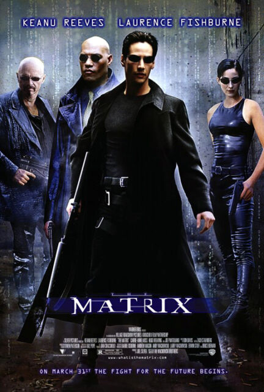
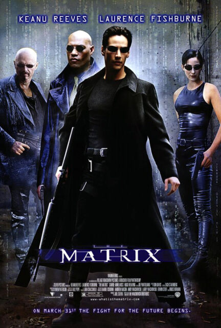

* Say "Voice Menu"
Key takeaways
- Engagement with voice commands would increase if the command options were clearly laid out.
- Limiting the vocabulary of a speech recognition tool greatly increases the accuracy of command identification.
 Back
{{mi.text}}
Exit Menu
Back
{{mi.text}}
Exit Menu
 
